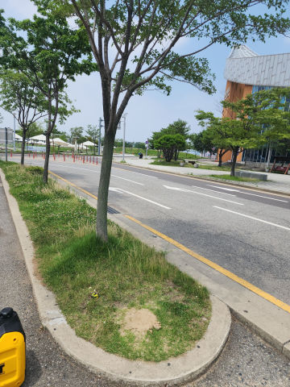
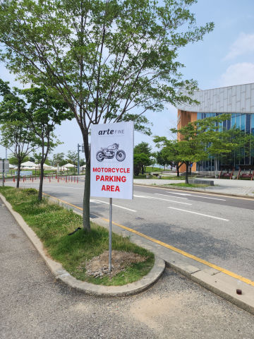
표지판설치 / WORK CASE
지주형 안내표지판 신규·교체 설치
현장 안내가 필요한 위치에 지주형 표지판을 설치한 사례입니다.앙카식·매립식 등 바닥 조건에 맞는 고정 방식을 선택합니다.
부천시 소사구 심곡본동 표지판설치 작업은 현장 사진과 바닥·고정부 상태를 먼저 확인합니다. 주차장, 사업장, 공장, 건물 출입구의 안내·주의 표지판을 벽부형, 지주형, 앙카식, 매립식 등 현장에 맞는 방식으로 설치·교체합니다. 기존 지주 파손과 기울어짐도 함께 확인합니다. 1개·소량 시공부터 기존 제품 철거, 작업 후 발생하는 폐기물 처리까지 함께 상담할 수 있습니다.
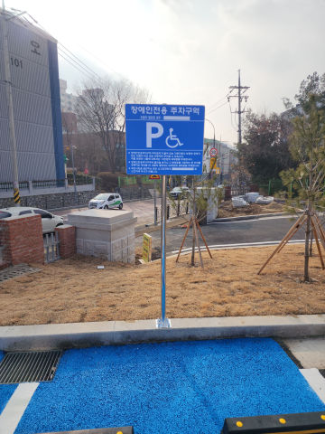
볼라드·차선규제봉·반사경·카스토퍼 등
실제 설치·교체 전후 현장을 함께 확인해 보세요.


현장 안내가 필요한 위치에 지주형 표지판을 설치한 사례입니다.앙카식·매립식 등 바닥 조건에 맞는 고정 방식을 선택합니다.
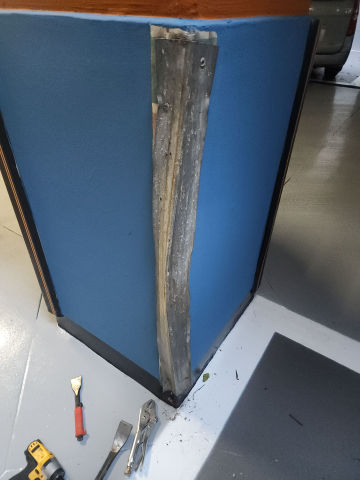
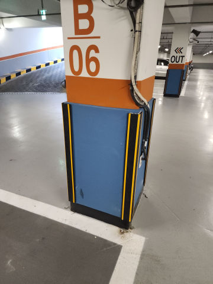
찢어지고 들뜬 기존 코너가드를 제거하고 새 보호대를 설치한 사례입니다.기둥 바탕과 접착 상태를 확인해 재고정합니다.
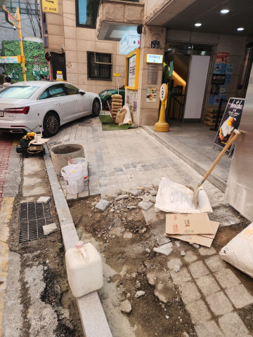
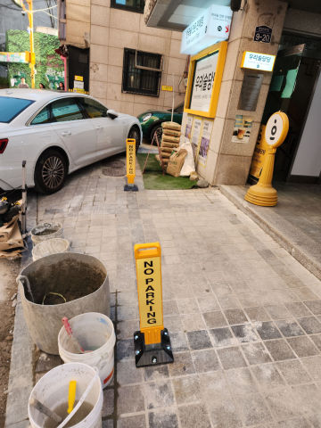
지정 주차면의 무단주차를 줄이기 위해 접이식 주차금지봉을 설치한 사례입니다.접었을 때 차량 간섭과 바닥 고정 상태를 함께 봅니다.
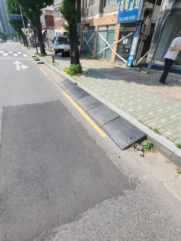
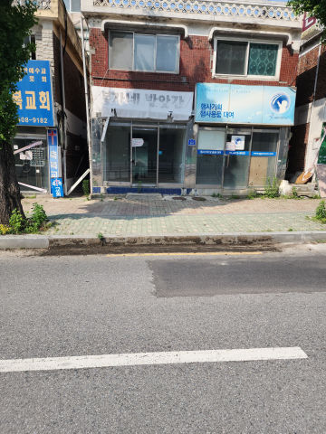
파손된 고무 차량진입판을 철거하고 출입구 단차와 통행 폭에 맞춰 교체하는 작업입니다.기존 자재와 작업 폐기물 정리까지 범위를 함께 잡을 수 있습니다.
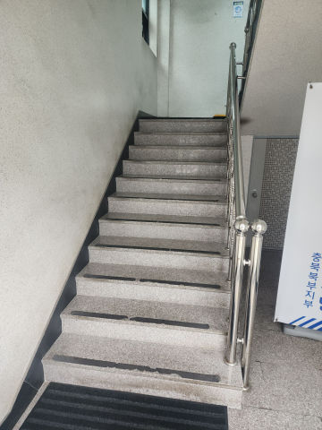
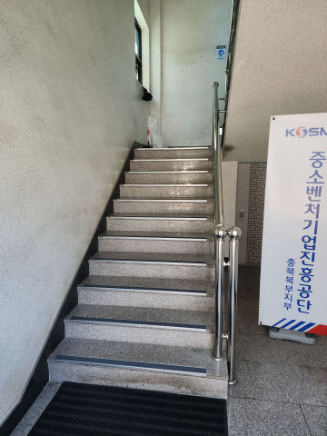
들뜨고 손상된 미끄럼방지 자재를 제거한 뒤 계단 바탕을 정리하고논슬립패드를 다시 설치한 사례입니다.
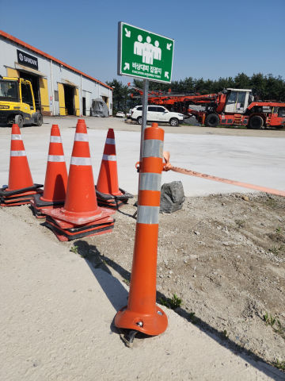
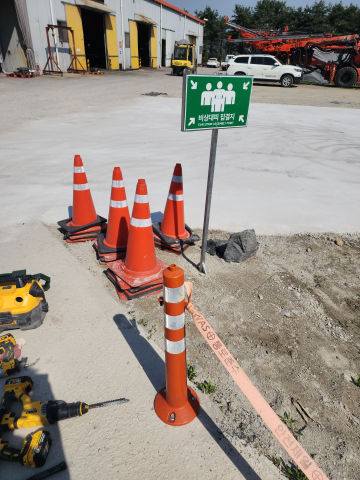
지게차·차량에 눌린 규제봉을 부분 철거하고 새 제품을 설치한 사례입니다.베이스와 앙카가 손상됐는지 확인한 뒤 재사용 또는 교체 여부를 판단합니다.
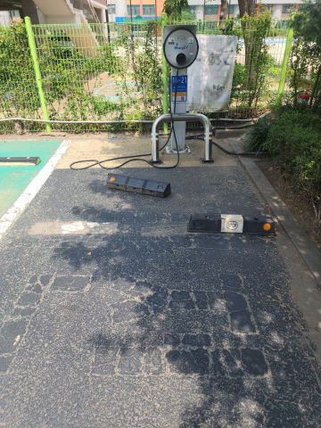
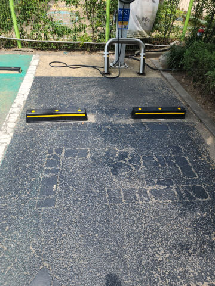
후진 충격으로 본체와 고정부가 이탈한 카스토퍼를 철거하고 새 제품을 설치한 사례입니다.콘크리트·아스콘 등 바닥 재질에 맞는 고정 방법을 적용합니다.
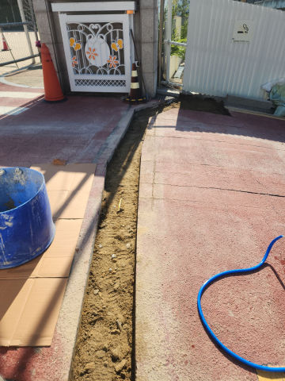
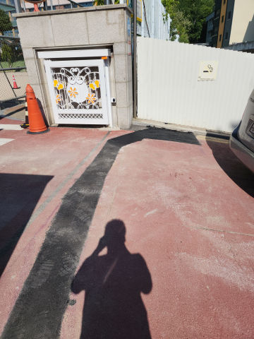
파인 포장면을 정리하고 보수재를 채운 뒤 다짐과 평탄 작업을 진행한 사례입니다.반복 파손 여부와 하부 침하 가능성도 확인합니다.
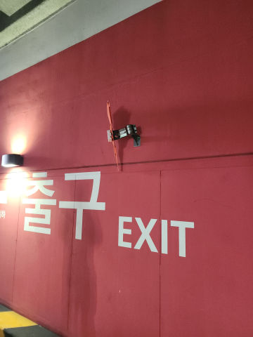
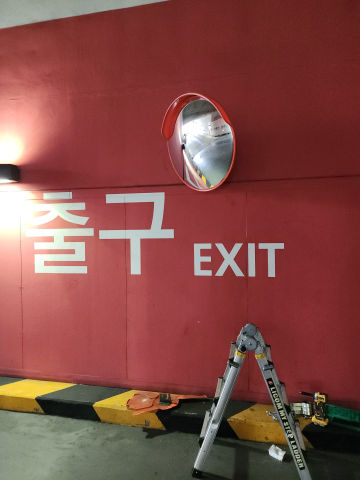
차량 접촉으로 깨진 주차장 반사경을 철거하고새 반사경을 설치한 사례입니다.브라켓·지주 상태와 실제 시야각을 함께 확인해 사각지대 해소와 접촉사고 예방에 맞춰 설치 위치를 잡습니다.
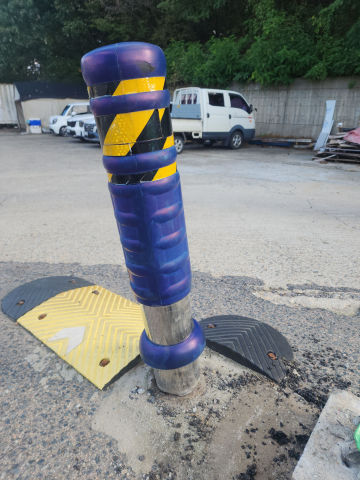
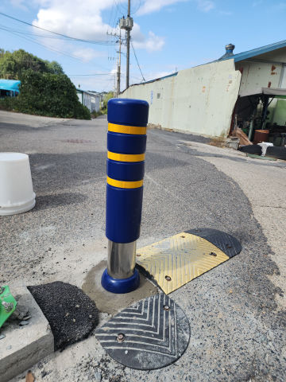
차량 충돌로 꺾이거나 훼손된 기존 볼라드를 철거하고 새 제품으로 교체한 사례입니다.제품뿐 아니라 기존 고정부와 바닥 손상을 함께 확인해 재설치 범위를 정합니다.
같은 현장의 다른 시설물 작업도 함께 확인할 수 있습니다.
제품 종류와 설치 상태를 사진으로 먼저 확인하면 작업 범위를 정하는 데 도움이 됩니다.
붙일 벽이나 기둥이 있고 운전자 시야가 잘 나오면 벽부형이 깔끔합니다.독립된 위치에 세워야 하거나 여러 방향에서 봐야 하는 곳은 지주형을 많이 사용합니다.표지판 문구보다 먼저 실제로 잘 보이는 위치를 잡는 것이 중요합니다.
콘크리트 바닥을 이용할 수 있으면 베이스 앙카식으로 설치할 수 있고, 외부에서 더 단단한 고정이 필요하면 매립식을 검토합니다.이동이 필요한 현장은 고정식 대신 이동식 구조가 더 편할 수도 있습니다.
설치 장소의 습기와 부식 환경, 표지판 크기와 무게, 원하는 외관에 따라 재질을 고릅니다.외부에 오래 두는 표지판은 판재뿐 아니라 지주와 체결부 재질도 같이 봐야 합니다.
지주가 곧게 서 있고 녹이나 흔들림이 심하지 않다면 판만 새로 달 수 있는지 먼저 확인합니다.앙카가 풀렸거나 지주 하부가 부식된 상태라면 판만 바꿔도 오래 쓰기 어려워 고정부까지 같이 보는 편이 좋습니다.
주차구역 안내판이나 출입구 안내판처럼 한 개만 필요한 작업도 상담합니다.설치할 위치 사진과 원하는 문구, 대략적인 크기를 알려주시면 준비해야 할 내용을 먼저 정리할 수 있습니다.
운전자가 접근하는 방향과 멀리서 가려지는 물체가 있는지 확인해 높이와 각도를 잡습니다.특히 출입구는 한쪽 방향에서만 잘 보이는 위치를 피하는 것이 좋습니다.
프레임이나 지주가 멀쩡하면 판만 새로 제작해 교체하는 방법을 먼저 봅니다.기존 구멍 위치와 판 크기가 달라지면 브라켓이나 체결 방식도 같이 조정할 수 있습니다.
부천시 소사구 심곡본동 외에도 같은 시공항목의 다른 지역 페이지를 연결해 두었습니다.
현장 전체, 파손 부위 근접, 바닥·고정부가 보이는 사진과 수량을 보내면 필요한 추가 정보부터 안내합니다.